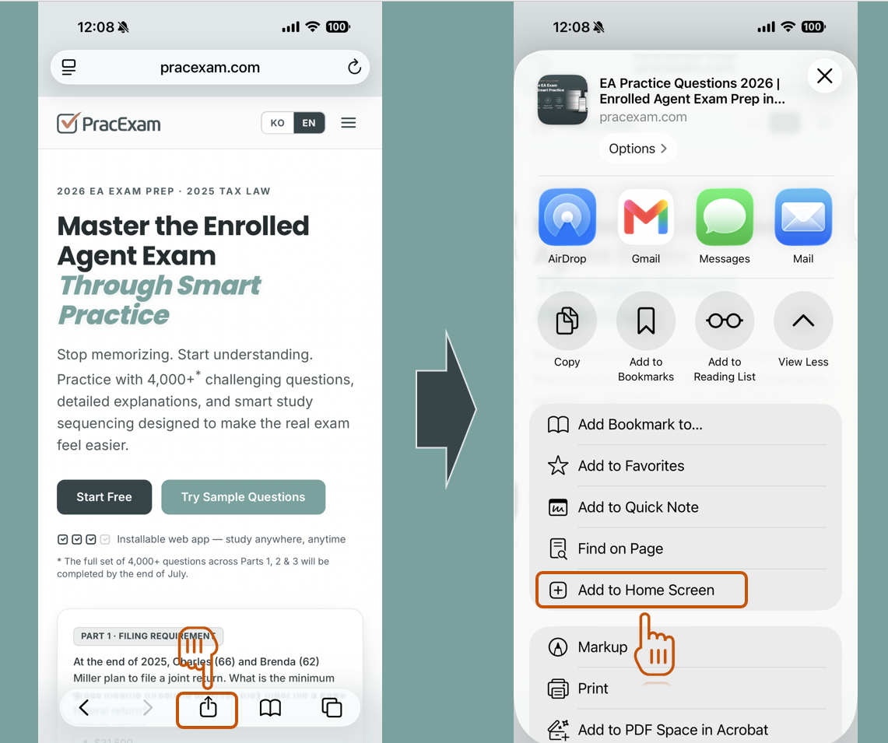
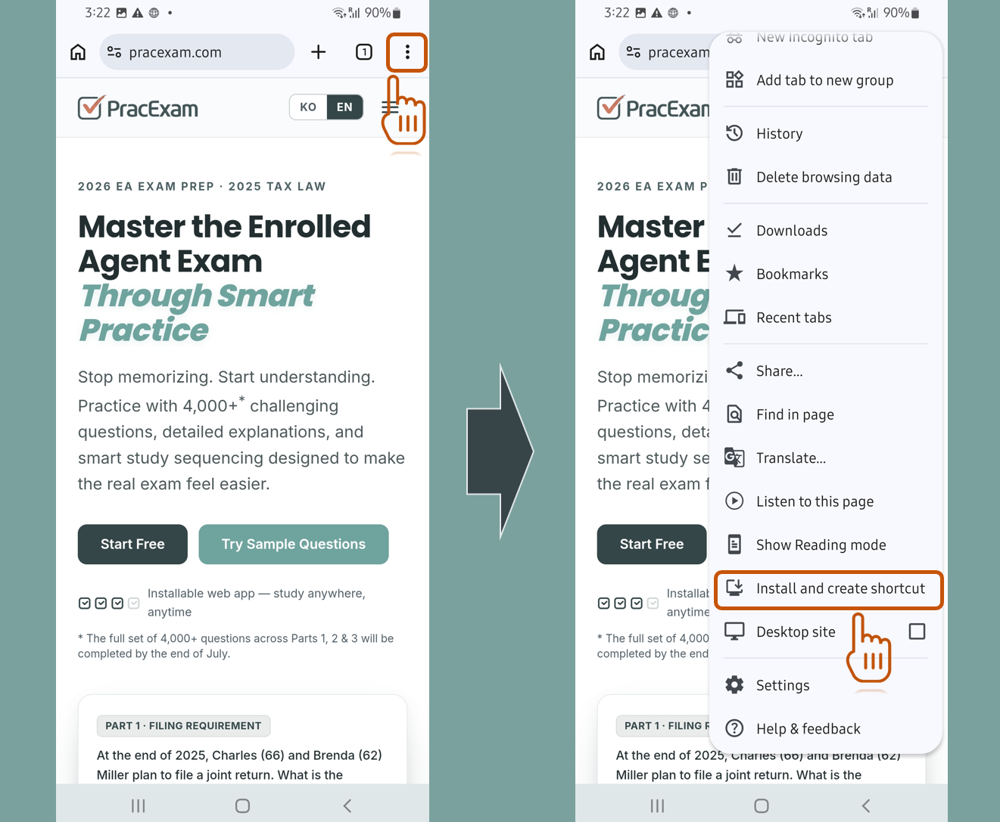

설치형 웹앱Installable Web App
홈 화면에 앱으로 설치하기Install PracExam on your home screen
PracExam은 앱 스토어에서 내려받지 않아도, 브라우저에서 홈 화면에 추가만 하면 앱처럼 사용할 수 있습니다. 아래 안내를 따라 1분이면 설치가 끝납니다. You don't need the App Store — just add PracExam to your home screen from your browser and it works like a native app. It takes about a minute. Follow the steps below.
홈 화면 아이콘 한 번에 실행One-tap launch icon
주소창 없는 전체 화면Full-screen, no address bar
더 빠른 실행Faster to open
1
Safari에서 사이트 열기Open the site in Safari
Safari 브라우저에서 pracexam.com에 접속하세요. (카카오톡·인스타그램 등 앱 안의 브라우저에서는 설치가 안 됩니다. 꼭 Safari로 여세요.)
Open pracexam.com in the Safari browser. Installing does not work from in-app browsers (KakaoTalk, Instagram, etc.) — be sure to use Safari.
2
공유 버튼 누르기Tap the Share button
화면 아래쪽 가운데(또는 상단)의 공유 아이콘(위로 향한 화살표가 있는 네모)을 누르세요.
Tap the Share icon (a square with an upward arrow) at the bottom-center — or top — of the screen.
3
"홈 화면에 추가" 선택Choose "Add to Home Screen"
메뉴를 아래로 스크롤해 "홈 화면에 추가"(Add to Home Screen)를 누르세요.
Scroll down the menu and tap "Add to Home Screen".

4
"추가" 눌러 완료Tap "Add" to finish
오른쪽 위 "추가"(Add)를 누르면 끝! 홈 화면에 PracExam 아이콘이 생깁니다. 이제 그 아이콘으로 언제든 바로 실행하세요.
Tap "Add" in the top-right corner — done! A PracExam icon appears on your home screen. Launch it any time with a single tap.
1
Chrome에서 사이트 열기Open the site in Chrome
Chrome 브라우저에서 pracexam.com에 접속하세요. (카카오톡·삼성 인터넷 등에서도 비슷하지만 Chrome을 권장합니다.)
Open pracexam.com in the Chrome browser. Other browsers (Samsung Internet, etc.) are similar, but Chrome is recommended.
2
메뉴(⋮) 열기Open the menu (⋮)
화면 오른쪽 위의 점 세 개 메뉴 아이콘(⋮)을 누르세요.
Tap the three-dot menu icon (⋮) in the top-right corner.
3
"앱 설치" 선택Choose "Install"
메뉴에서 "홈 화면에 추가", "앱 설치"(Install app), 또는 "설치 및 바로가기 만들기"(Install and create shortcut)를 누르세요. (Chrome 버전에 따라 표현이 조금씩 다릅니다.)
In the menu, tap "Add to Home screen", "Install app", or "Install and create shortcut". (The exact wording varies by Chrome version.)

4
"추가"·"설치" 눌러 완료Tap "Add" / "Install"
확인 창에서 "추가" 또는 "설치"를 누르면 끝! 홈 화면(또는 앱 서랍)에 PracExam 아이콘이 생깁니다.
In the confirmation dialog, tap "Add" or "Install" — done! A PracExam icon appears on your home screen (or app drawer).
"추가" 메뉴가 안 보이나요?Don't see the "Add" option?
대부분 앱 안의 브라우저(카카오톡·인스타그램·페이스북 등에서 링크를 눌러 열었을 때)에서 생기는 문제입니다. 오른쪽 위 메뉴에서 "다른 브라우저로 열기" 또는 "Safari로 열기 / Chrome으로 열기"를 선택한 뒤 다시 시도하세요. This almost always happens inside an in-app browser (opening a link from KakaoTalk, Instagram, Facebook, etc.). Use the menu to choose "Open in Safari" or "Open in Chrome", then try again.
자주 묻는 질문FAQ
앱 스토어에서 받는 진짜 앱인가요?Is this a real App Store app?
아니요. PracExam은 웹앱(PWA)으로, 앱 스토어를 거치지 않고 브라우저에서 바로 홈 화면에 설치됩니다. 설치 후에는 전체 화면으로 실행되어 일반 앱과 거의 같은 느낌으로 사용할 수 있습니다.
No. PracExam is a web app (PWA) — it installs to your home screen straight from the browser, without going through an app store. Once installed it opens full-screen and feels almost like a native app.
데이터 요금이나 용량을 많이 쓰나요?Does it use a lot of storage or data?
아니요. 홈 화면 아이콘은 사실상 바로가기라 저장 공간을 거의 차지하지 않습니다.
No. The home-screen icon is essentially a shortcut and takes up almost no storage.
로그인은 유지되나요?Do I stay logged in?
네. 설치한 아이콘으로 실행하면 로그인 상태가 유지되어, 매번 다시 로그인하지 않아도 됩니다.
Yes. When you launch from the installed icon your session is kept, so you don't have to sign in every time.
삭제하려면 어떻게 하나요?How do I remove it?
다른 앱과 똑같이, 홈 화면 아이콘을 길게 눌러 "삭제"(앱 제거)를 선택하면 됩니다. 학습 데이터는 계정에 저장되어 있어 나중에 다시 설치해도 그대로 이어집니다.
Just like any app: long-press the icon and choose "Remove" / "Uninstall". Your study data is stored in your account, so it's still there if you reinstall later.